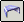
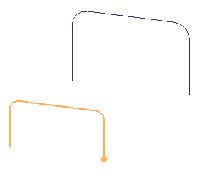
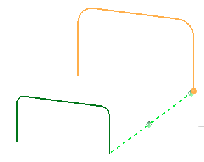
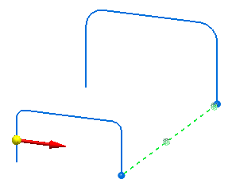
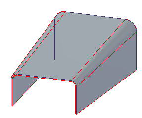

Construct a lofted flange
-
Choose Home tab→Sheet Metal group→Contour Flange list→Lofted Flange button

. -
On the command bar, select a method for creating the first cross section—you can draw a cross section or select a cross section from a sketch.
-
Do one of the following:
-
If you are drawing a cross section, define the profile plane you want to draw it on, then draw a cross section or copy a cross section into the profile window. Click the Finish button.
-
If you are using a sketch to define the cross section, select the sketch you want to use.

-
-
For non-periodic cross section curves, position the cursor near the vertex you want to use as the start point. Click when a dot appears at the correct vertex and then click the Finish button on the command bar.
-
Create the second cross section, then click the Next button on the command bar.

-
Set the Side option.

-
Finish the feature.

Lofted flange profiles must be on parallel reference planes.